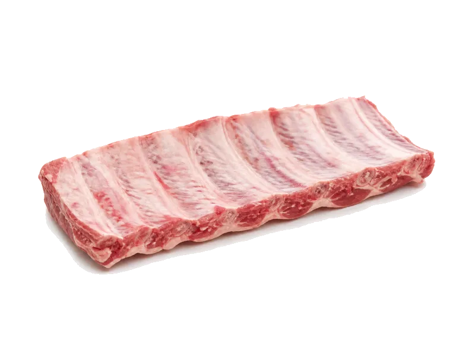

Polskie obiadki
Żeberka wieprzowe
Żeberka wieprzowe to produkt z kategorii Polskie obiadki. Na 100 g znajdziesz 18 g białka (proteinów), 277 kcal kalorii, 0 g węglowodanów oraz 22 g tłuszczu — idealne dane przy zdrowym odżywianiu, odchudzaniu lub budowie masy mięśniowej. Współczynnik ok. 15.4 kcal na 1 g białka pomaga porównać gęstość odżywczą. BBQ i sos podbijają kcal.
Kalorie277 kcalna 100 g
Białko / proteiny18 g
Węglowodany0 g
Tłuszcz22 g
Cena (szac.)~2,26 złza 100 g
Ceny zaktualizowano: maj 2026 (szacunek — ceny w popularnych supermarketach)
Porcja: porcja (150g)
| Kalorie | 416 kcal |
|---|---|
| Białko | 27 g |
| Węglowodany | 0 g |
| Tłuszcz | 33 g |
| Cena (szac.) | ~3,39 zł |
Szczegółowe składniki odżywcze na 100 g
| Wartość energetyczna (kalorie) | 277 kcal |
|---|---|
| Białko (proteiny) | 18 g |
| Węglowodany | 0 g |
| Tłuszcz | 22 g |
| Tłuszcze nasycone | 8 g |
| Tłuszcze nienasycone | 14 g |
| Witaminy i minerały | Żelazo, Tiamina (B1), Potas |
| Współczynnik kcal / 1 g białka | 15.4 |
| Cena produktu (szac. za 100 g) | ~2,26 zł |
| Cena za 100 g białka (szac.) | ~12,56 zł |